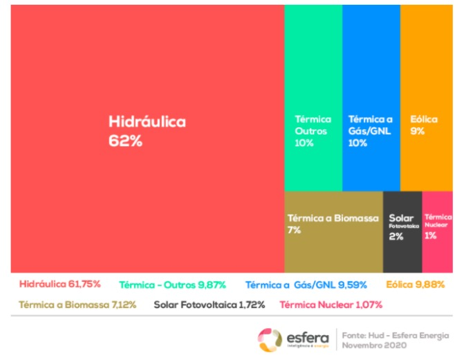

A energia hidráulica é obtida aproveitando o potencial gravitacional da água corrente e das cachoeiras. Quando é usado para gerar eletricidade, é chamado de energia hidrelétrica.
Devido ao seu enorme potencial hidrelétrico, o Brasil tem historicamente focado investimentos em usinas hidrelétricas. Por conta disso, a energia hidrelétrica foi e continuará sendo a principal fonte da matriz energética brasileira, respondendo atualmente por mais de 60% do total, conforme demonstrado no gráfico abaixo:

O gráfico demonstra perfeitamente a importância dessa fonte de energia para o sistema elétrico do país. Embora sua participação na matriz tenha diminuído ao longo dos anos (chegou a 90%), a hidráulica ainda é a força motriz por trás do Brasil.
A importância da energia hidráulica pode ser explicada por ser uma fonte segura de eletricidade. Além disso, por serem capazes de alterar rapidamente sua capacidade de geração de energia aumentando a vazão de água pelas turbinas, as usinas hidrelétricas são capazes de atender picos de consumo mais rapidamente do que outras fontes hídricas.
Outro diferencial da energia hidráulica é que ela é uma fonte de energia limpa e renovável. Afinal, não emite gases de efeito estufa e a água é um recurso que ainda é constantemente reabastecido pela natureza.
Esse fator é importante quando se considera que a matriz energética mundial ainda é dominada por recursos não renováveis. Isso significa que a queima de combustíveis fósseis que produzem gases poluentes nocivos ao meio ambiente ainda abastece a maioria das residências e indústrias do planeta.
Embora a energia hidrelétrica seja uma fonte de energia limpa, as usinas hidrelétricas têm uma série de impactos ambientais e sociais, que detalharemos mais adiante. Antes disso, vamos relembrar outros tipos de energia que são menos problemáticos para o nosso planeta.
Vantagens e Desvantagens